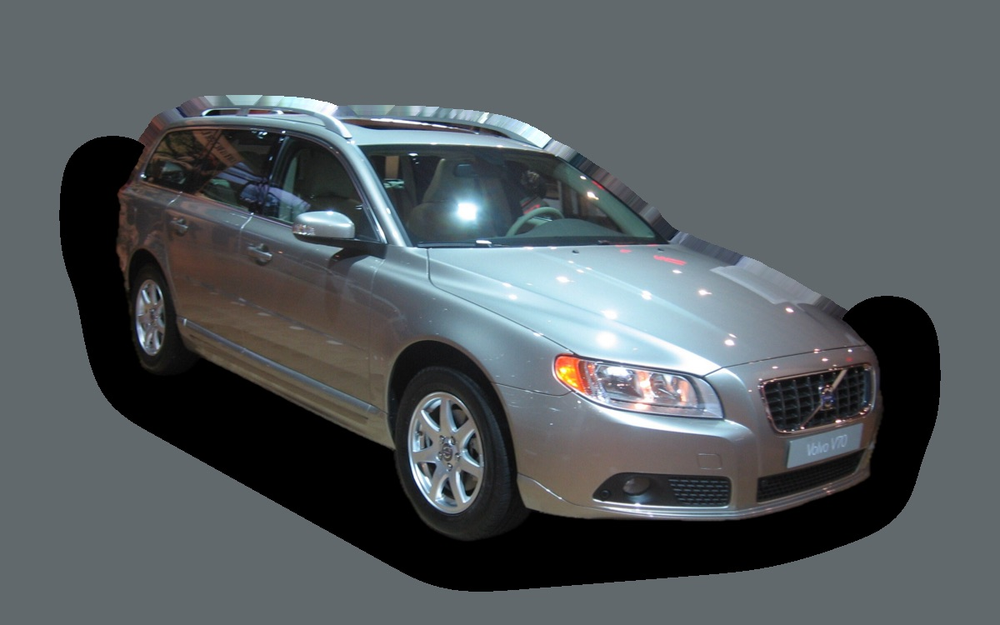

Vad kostar en Volvo V70 per månad?
En Volvo V70 från 2013 kostar cirka 3 457 kr i månaden, allt inräknat.
3 457 krper månad, årsmodell 2013
78 000 krpris, årsmodell 2013
335 000 krsenaste nypris
Bprisvärdhetsbetyg (2013)


Månadskostnad per årsmodell
| Årsmodell | Version i beräkningen | Pris | Per månad | Betyg |
|---|---|---|---|---|
| 2016 | D4 181, Kinetic | 113 000 kr | 3 692 kr | A |
| 2013 | D4 181, Kinetic | 78 000 kr | 3 457 kr | B |
| 2010 | D4 181, Kinetic | 54 000 kr | 3 269 kr | B |
Räknat på 5 års ägande och 1 250 mil per år, med bränslepriser från 2026-10-22. Månadskostnaden innehåller värdeminskning, drivmedel, service och reparationer, försäkring och fordonsskatt.
Så fördelas kostnaden för en 2013:a
- Värdeminskning: 596 kr/mån
- Drivmedel: 1 419 kr/mån
- Service och reparationer: 1 135 kr/mån
- Försäkring: 180 kr/mån
- Fordonsskatt: 128 kr/mån
Begagnatpriser i annonser
| Årsmodell | Medianpris | Annonser | Typiskt miltal |
|---|---|---|---|
| 2016 | 114 900 kr | 58 | 24 200 mil |
| 2015 | 99 900 kr | 91 | 25 000 mil |
| 2014 | 95 000 kr | 60 | 27 200 mil |
| 2013 | 89 000 kr | 73 | 27 600 mil |
| 2012 | 84 900 kr | 61 | 25 000 mil |
| 2011 | 69 900 kr | 80 | 28 600 mil |
| 2010 | 50 000 kr | 80 | 31 900 mil |
| 2009 | 42 900 kr | 90 | 29 300 mil |
| 2008 | 43 500 kr | 119 | 29 900 mil |
Medianpriset i svenska annonser per årsmodell i oktober 2026 (källa: Blocket). Annonspriser är utgångspriser, och slutpriset kan bli lägre.
Motorer och versioner
| Motor | Drivmedel | Effekt | 0–100 km/h | Förbrukning (WLTP) | Räckvidd | Årsmodeller | Pristillägg |
|---|---|---|---|---|---|---|---|
| D4 181 | Diesel | 181 hk | 8,5 s | 4,5 l/100 km | – | 2008–2016 | – |
| T4 190 | Bensin | 190 hk | 8,4 s | 6,4 l/100 km | – | 2008–2016 | +-43 600 kr |
- Utrustning: Kinetic, Summum (+40 400 kr)
Fakta
- Kaross
- Kombi
- Årsmodeller
- 2008–2016
- Senaste nypris
- 335 000 kr
- Bagage
- 575 liter
- Euro NCAP
- 5 av 5 stjärnor
- Nybilsgaranti
- 3 år
- Driftsäkerhet
- 4 av 5
- Helförsäkring, uppskattning
- 5 700 kr/år
- Service, uppskattning
- 4 600 kr/år
Vanliga fel att ha koll på
- Insprutare och virvelspjäll (femcylindrig diesel), reparation cirka 7 000 kr
- Kamrem och vattenpump förstörs av oljeläckage, reparation cirka 11 000 kr
- Partikelfilter och EGR (diesel), reparation cirka 9 000 kr
- Automatlådan (Aisin TF-80SC) går sönder, reparation cirka 55 000 kr
- Oljeförbrukning och kamkedjespännare (Drive-E bensin), reparation cirka 16 000 kr
- Turbon går sönder, reparation cirka 15 000 kr
Felen gäller vissa motorer och årsmodeller. I kalkylatorn räknas risken för just den version du väljer.
Fördelar och nackdelar
Fördel
Sveriges klassiska familjekombi, stor och billig begagnad.
Nackdel
Äldre konstruktion med högre förbrukning, och tillverkas inte längre.
Liknande bilar
 Saab 9-3 SportCombi3 462 kr/mån som 2008:a
Saab 9-3 SportCombi3 462 kr/mån som 2008:a Ford Focus Kombi3 482 kr/mån som 2022:a
Ford Focus Kombi3 482 kr/mån som 2022:a Skoda Octavia Kombi3 517 kr/mån som 2023:a
Skoda Octavia Kombi3 517 kr/mån som 2023:a- Bild saknasSeat Leon Sportstourer3 376 kr/mån som 2023:a
 Kia Ceed SW3 360 kr/mån som 2023:a
Kia Ceed SW3 360 kr/mån som 2023:a Peugeot 308 SW3 590 kr/mån som 2023:a
Peugeot 308 SW3 590 kr/mån som 2023:a
Uppdaterad 2026-10-27 · annonsdata okt 2026